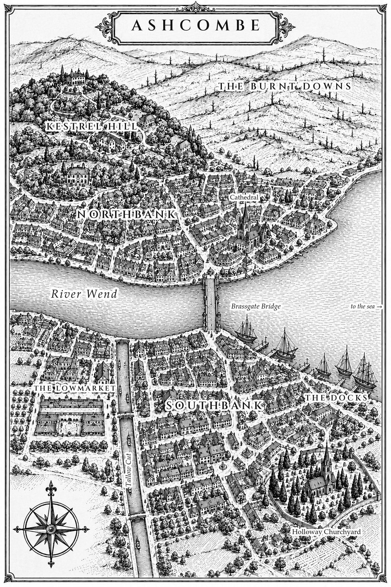

The book
On the Southbank of Ashcombe, the old and the sick are dying in their sleep, and the doctors sign every certificate the same way. A tired heart, a long life, a natural end.
Inspector Gideon Hale knows better. He has stood in their bedrooms with hollow sage bitter on his tongue, and he has felt what was missing. Not just a life, but every trace that a life was ever there.
But he can't say how he knows. The leaf that lets him feel the living, and take their strength for his own, has been outlawed for thirty years, and Gideon has been hiding his habit from his captain, his partner, and his teenage son for most of them. Every pinch costs him something. Every pinch brings him closer to the day he can't hide it anymore.
Someone is draining the life from the dying, and the only man who can follow the trail is the one with the most to lose if he does. As the bodies mount and Constable Ida Fenwick starts asking questions he can't answer, Gideon has to decide what he's willing to spend: his sight, his badge, his son's trust, or his name.
A standalone novel about addiction, fatherhood, and a magic with a terrible price. It's a clean read, with no profanity and no sexual content.
Ashcombe
The city where the book takes place, from the reader map in the book. No spoilers.

About the author
I'm Ben Anderson, an AI engineer who uses AI to build software for enterprises every day. I grew up on fantasy, and as an adult I had a hard time finding stories that were clean without being written for kids. So I wanted to see whether what I'd learned about building quality code could carry over to building a book.
The world, the magic system, the plot and the characters are mine, and the prose was written almost entirely by AI, working within style rules I developed from studying how professional fantasy authors approach the craft. I'd rather be upfront about that, because I think readers deserve to know how a book was made. Ash of Verdance is my first book.